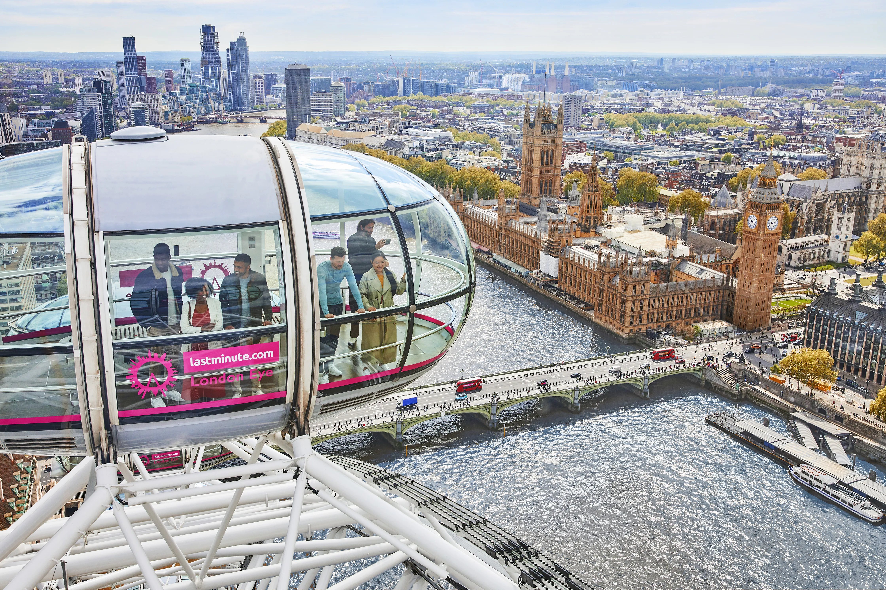
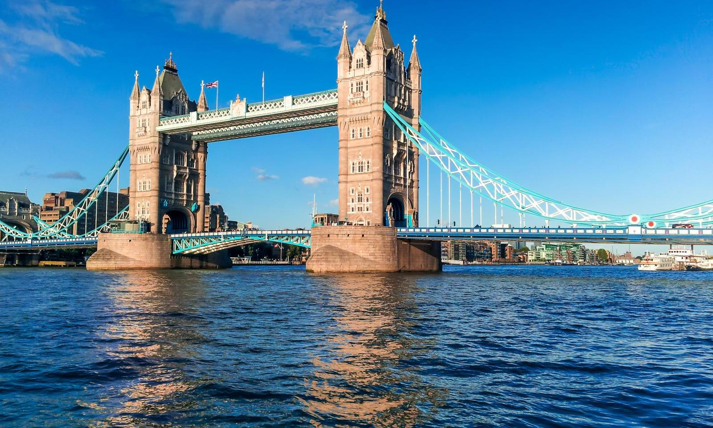
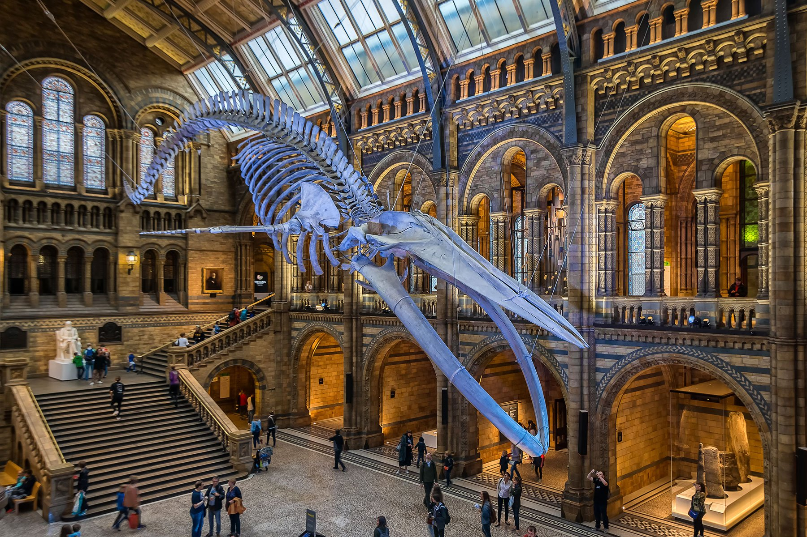
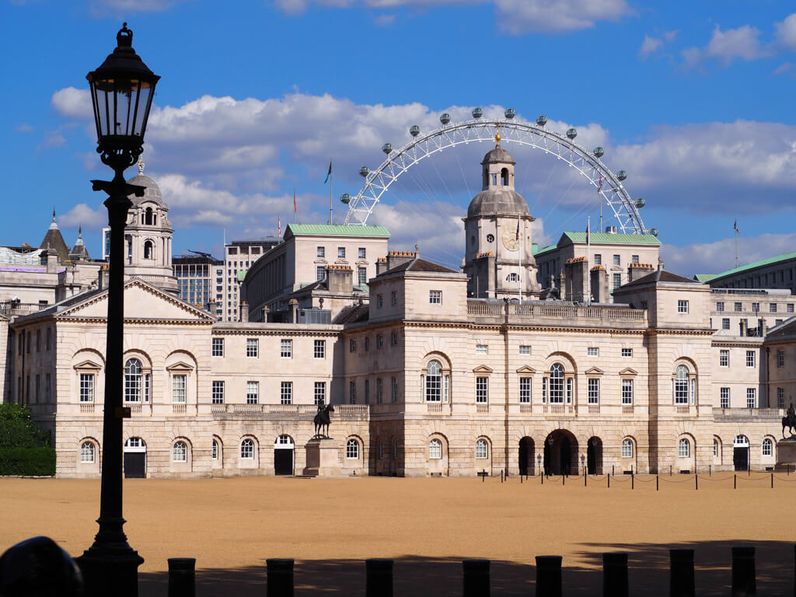
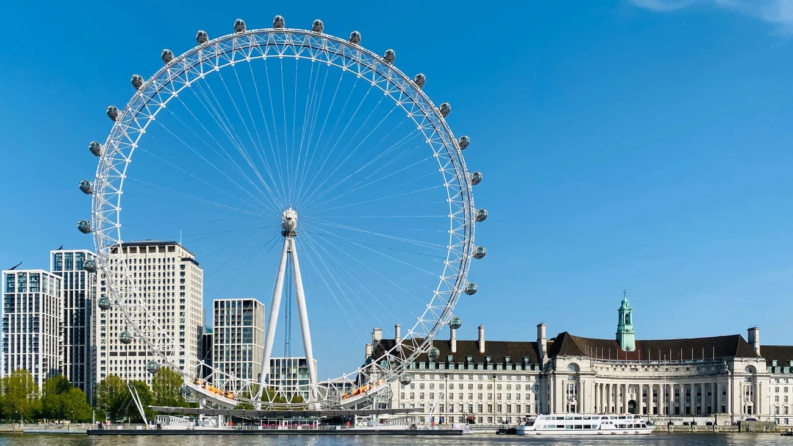

UK HERITAGE TRAILS / EXPLORE
London: Places to Visit
Discover famous landmarks, museums and cultural attractions across London.

The Circular Traverse above the beautiful River Thames.

A historic Victorian bridge over the River Thames.

Modern art museum and exhibitions.

Panoramic skyline views from the South Bank.

Heritage streets and historic architecture.

Explore exhibitions and galleries across the city.